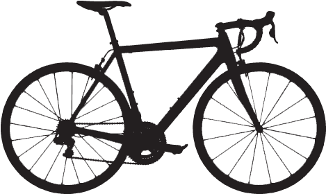

Bike station map.
Easy and simple to use bike stations dotted all over the city!
So, the scheme works by allowing people to rent bicycles from various "stations" dotted all over Bristol city. You can choose many different options like one way/ return journeys, all day and long term rentals. So the scheme is flexible to you're needs. Find out about station locations on the map page. We encourage you to try us out and see what you think! Together we can improve our health, save the environment and have some fun along the way. This scheme can be a great option for many people! Commuting to work and want to avoid the public transport rush? Touring Bristol and want to do something fun and different? Want the joys of riding a bike without dedicating to the expense of buying your own. You may find Bikeshare is a good option for you! Please browse our membership and pricing page and if you have any queries, do not hesitate to contact us by email or social media!